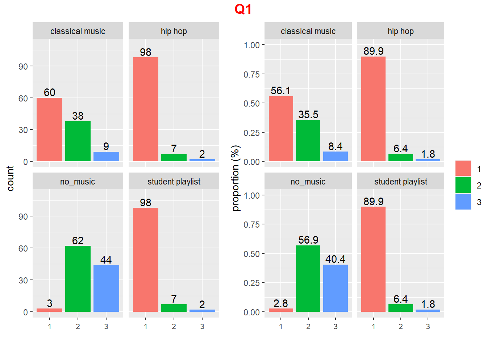
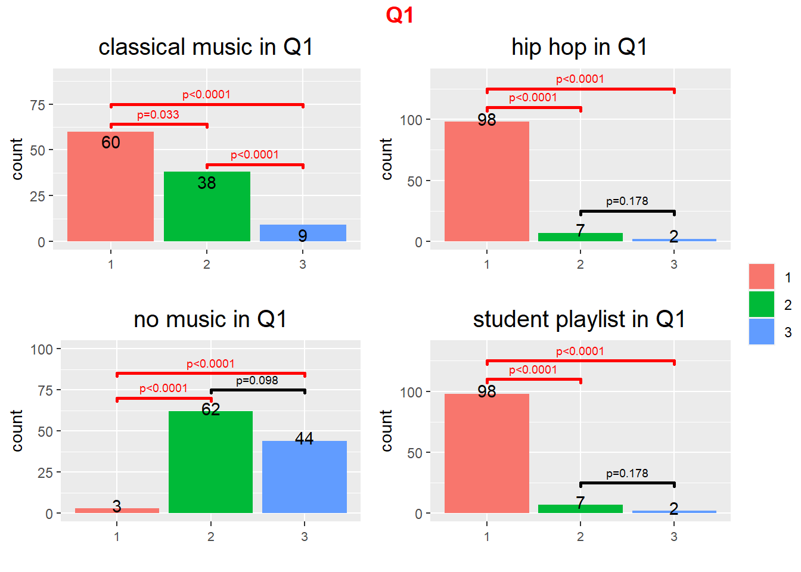

Last updated: 2023-02-09
Checks: 7 0
Knit directory: Collaborations/
This reproducible R Markdown analysis was created with workflowr (version 1.7.0). The Checks tab describes the reproducibility checks that were applied when the results were created. The Past versions tab lists the development history.
Great! Since the R Markdown file has been committed to the Git repository, you know the exact version of the code that produced these results.
Great job! The global environment was empty. Objects defined in the global environment can affect the analysis in your R Markdown file in unknown ways. For reproduciblity it’s best to always run the code in an empty environment.
The command set.seed(20210523) was run prior to running
the code in the R Markdown file. Setting a seed ensures that any results
that rely on randomness, e.g. subsampling or permutations, are
reproducible.
Great job! Recording the operating system, R version, and package versions is critical for reproducibility.
Nice! There were no cached chunks for this analysis, so you can be confident that you successfully produced the results during this run.
Great job! Using relative paths to the files within your workflowr project makes it easier to run your code on other machines.
Great! You are using Git for version control. Tracking code development and connecting the code version to the results is critical for reproducibility.
The results in this page were generated with repository version 29bb4b2. See the Past versions tab to see a history of the changes made to the R Markdown and HTML files.
Note that you need to be careful to ensure that all relevant files for
the analysis have been committed to Git prior to generating the results
(you can use wflow_publish or
wflow_git_commit). workflowr only checks the R Markdown
file, but you know if there are other scripts or data files that it
depends on. Below is the status of the Git repository when the results
were generated:
Ignored files:
Ignored: analysis/.Rhistory
Note that any generated files, e.g. HTML, png, CSS, etc., are not included in this status report because it is ok for generated content to have uncommitted changes.
These are the previous versions of the repository in which changes were
made to the R Markdown (analysis/2022_Sep3_Chole.Rmd) and
HTML (docs/2022_Sep3_Chole.html) files. If you’ve
configured a remote Git repository (see ?wflow_git_remote),
click on the hyperlinks in the table below to view the files as they
were in that past version.
| File | Version | Author | Date | Message |
|---|---|---|---|---|
| Rmd | 29bb4b2 | Han | 2023-02-09 | 2/9/2023 |
| html | 29bb4b2 | Han | 2023-02-09 | 2/9/2023 |
| Rmd | 03c0ab1 | Han | 2023-02-03 | 2/3/2023 |
| html | 03c0ab1 | Han | 2023-02-03 | 2/3/2023 |
| Rmd | de7bc48 | Han | 2023-02-02 | 2/2/2023 |
| html | de7bc48 | Han | 2023-02-02 | 2/2/2023 |
| Rmd | e6edcc7 | Han | 2023-02-01 | 2/1/2023 |
| html | e6edcc7 | Han | 2023-02-01 | 2/1/2023 |
| Rmd | 9c6106c | Han | 2023-01-30 | 1/30/2023 |
| html | 9c6106c | Han | 2023-01-30 | 1/30/2023 |
| Rmd | 052a06a | Han | 2022-10-10 | 10/10/2022 |
| html | 052a06a | Han | 2022-10-10 | 10/10/2022 |
| Rmd | 95ad5ff | Han | 2022-10-07 | 10/7/2022 |
| html | 95ad5ff | Han | 2022-10-07 | 10/7/2022 |
| html | 3beae16 | Han | 2022-10-05 | 10/5/2022 |
| Rmd | 0751aa4 | Han | 2022-10-05 | 10/5/2022 |
| html | 0751aa4 | Han | 2022-10-05 | 10/5/2022 |
| Rmd | f8fe634 | Han | 2022-10-04 | 10/4/2022 |
| html | f8fe634 | Han | 2022-10-04 | 10/4/2022 |
[1] "How.did.2t.having.music.impact.your.energy.level.during.class."[1] "How.easy.was.it.to.focus.during.class.periods.without.music."[1] "How.did.2t.having.music.played.during.previous.sessions.impact.your.concentration.when.performing.root.canal.treatments.of..9.and.or..4."[1] "Did.2t.having.music.played.interfere.with.your.ability.to.complete.the.root.canal.treatment.on..9.and.or..4."
1. How did not having music impact your energy level during class?
a. It kept my energy level up and refreshed.
b. It did not impact my energy level.
c. It drained and ran down my energy level.

2. How easy was it to focus during class periods without music?
a. Very easy
b. Somewhat easy
c. Somewhat difficult
d. Very difficult
3. How did not having music played during today’s session impact your concentration when performing root canal treatments of #9 and/or #4?
a. The music increased my concentration in class.
b. The music neither increased nor decreased my concentration in class.
c. The music decreased my concentration in class.
4. Did not having music today interfere with your ability to complete the root canal treatment on #9 and/or #4?
a. Yes
b. No
1. Which class period did you like the best?
a. When no music was played
b. When hip-hop music was played
c. When classical music was played
d. When our class’s compilation playlist was played.
2. During which class period were you able to concentrate the most?
a. When no music was played
b. When hip-hop music was played
c. When classical music was played
d. When our class’s compilation playlist was played
3. Were you distracted due to the music played during a class period? If so, which one?
a. No I was not distracted in any of the sessions when music played.
b. Yes I was distracted in the session when hip-hop music played.
c. Yes I was distracted in the session when classical music played.
d. Yes I was distracted in the session when the class’s playlist was played.
4. Would you like music to be played during the final exam competencies?
a. Yes
b. No
5. If you would like music to be played during the final exam competencies, what genera of music would you prefer?
a. Hip-hop
b. Classical
c. Student’s compilation playlist
sessionInfo()R version 4.2.2 (2022-10-31 ucrt)
Platform: x86_64-w64-mingw32/x64 (64-bit)
Running under: Windows 10 x64 (build 19044)
Matrix products: default
locale:
[1] LC_COLLATE=English_United States.utf8
[2] LC_CTYPE=English_United States.utf8
[3] LC_MONETARY=English_United States.utf8
[4] LC_NUMERIC=C
[5] LC_TIME=English_United States.utf8
attached base packages:
[1] stats graphics grDevices utils datasets methods base
other attached packages:
[1] DT_0.26 rstatix_0.7.1 ggpubr_0.5.0 kableExtra_1.3.4
[5] forcats_0.5.2 stringr_1.5.0 dplyr_1.0.10 purrr_0.3.5
[9] readr_2.1.3 tidyr_1.2.1 tibble_3.1.8 ggplot2_3.4.0
[13] tidyverse_1.3.2
loaded via a namespace (and not attached):
[1] fs_1.5.2 lubridate_1.9.0 webshot_0.5.4
[4] httr_1.4.4 rprojroot_2.0.3 tools_4.2.2
[7] backports_1.4.1 bslib_0.4.2 utf8_1.2.2
[10] R6_2.5.1 DBI_1.1.3 colorspace_2.0-3
[13] withr_2.5.0 gridExtra_2.3 tidyselect_1.2.0
[16] compiler_4.2.2 git2r_0.30.1 cli_3.4.1
[19] rvest_1.0.3 xml2_1.3.3 labeling_0.4.2
[22] sass_0.4.4 scales_1.2.1 systemfonts_1.0.4
[25] digest_0.6.31 rmarkdown_2.19 svglite_2.1.0
[28] pkgconfig_2.0.3 htmltools_0.5.4 dbplyr_2.2.1
[31] fastmap_1.1.0 highr_0.9 htmlwidgets_1.6.0
[34] rlang_1.0.6 readxl_1.4.1 rstudioapi_0.14
[37] jquerylib_0.1.4 generics_0.1.3 farver_2.1.1
[40] jsonlite_1.8.4 crosstalk_1.2.0 car_3.1-1
[43] googlesheets4_1.0.1 magrittr_2.0.3 Rcpp_1.0.9
[46] munsell_0.5.0 fansi_1.0.3 abind_1.4-5
[49] lifecycle_1.0.3 stringi_1.7.8 whisker_0.4.1
[52] yaml_2.3.6 carData_3.0-5 grid_4.2.2
[55] promises_1.2.0.1 crayon_1.5.2 haven_2.5.1
[58] cowplot_1.1.1 hms_1.1.2 knitr_1.41
[61] pillar_1.8.1 ggsignif_0.6.4 reprex_2.0.2
[64] glue_1.6.2 evaluate_0.19 modelr_0.1.10
[67] vctrs_0.5.1 tzdb_0.3.0 httpuv_1.6.7
[70] cellranger_1.1.0 gtable_0.3.1 assertthat_0.2.1
[73] cachem_1.0.6 xfun_0.35 broom_1.0.2
[76] later_1.3.0 googledrive_2.0.0 viridisLite_0.4.1
[79] gargle_1.2.1 workflowr_1.7.0 timechange_0.1.1
[82] ellipsis_0.3.2